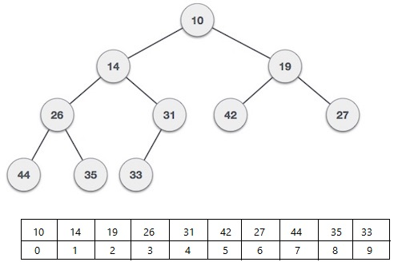

- Min heap is a complete binary tree with the property every parent has it's data vlaue smaller
data of both the children.
-
Complete binary tree is a tree with every node having at max two children
and all levels except the lowest one is completely filled. Lowest level
is left filled.
-
Interestingly the heap can be easily represented in a list format.
-
Consider the list of data objects. Each position in the list represents a node in tree structure.
- The parent child relation for 0 indexed list will be.
left child (list[i]) = list[2*i + 1]
right child (list[i]) = list[2*i + 2]
parent (list[i]) = list[(i - 1)/2] note it is the integer division.

If it 1 indexed then the relationship is
left child (list[i]) = list[2*i]
right child (list[i]) = list[2*i + 1]
parent (list[i]) = list[i/2]
We need to insert a sentinal node at index 0 to get this.
- In short the list is the level order traversal of the tree.
Functions
- add(Data)
- Append the Data to the end of list.
i.e., Put it in the leftmost empty postion in the lowest level of the tree representation.
-
Check whether it's parent is greater than it.
-
Swap it with it's parent until the parent is smaller than the Data.
-
This is a O(log2(n)) procedure. Since in worst case we need to swap it till
root of the tree. This is a complete tree. Therefore the height is O(log(n)).
- find(Data)
Since there is no order like the binary search tree. We need to linear search the Data in the list.
Hence a O(n) process.
- remove(Data)
- Find the Data
- Once found replace the Data with the last element in the list.
- Move the replaced data downwards utill both its children are not lessthan itself.
Check both children if one or more child has data smaller than the current, then
swap the current data with the smaller of the two.
- Finding the element is O(n) with very small constant factor.
But deleting if the pointer is known is O(log(n)) process (proportional to the height).
Example
Here we have given tree for int data, Can be easily replaced for other objects with total order.
Equal data are usually not allowed but in
this example we have put it towards the right child (can be either side).
Heap code